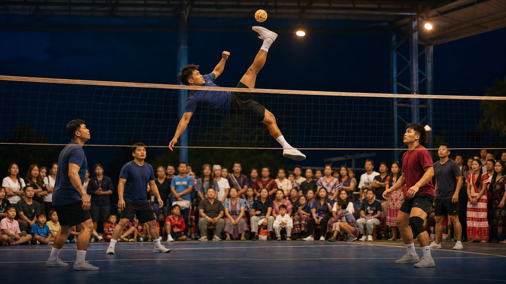

Public voice · Washington, D.C.
Showing up
Karen advocates gather where national decisions are made and make community concerns visible. Presence at the Capitol isn't a photo op — it's a position in the room.
Stories · the news hub, in the first person
The story of who the Karen people are, told as it happens — at the Capitol, on the courts, across the border, and in every gathering in between.
The story, in four movements
Karen advocates gather where national decisions are made and make community concerns visible. Presence at the Capitol isn't a photo op — it's a position in the room.

Sport creates room for teamwork, friendship, youth participation, and shared celebration. Belonging is active — built through ordinary moments as much as formal programs.

Visits and humanitarian connections keep communities in the United States linked to families in Kawthoolei. Practical assistance begins with relationships and community-defined needs.

Gatherings, workshops, arts, and public presence keep identity moving across generations. Young people, families, and leaders keep community knowledge moving forward.
What these moments show
Advocacy and civic learning make community concerns visible at every level — local, state, and national.
Language, arts, sport, and gathering connect generations — and keep the language itself alive in daily life.
Relationships guide practical assistance and long-term support, here in America and across the border.